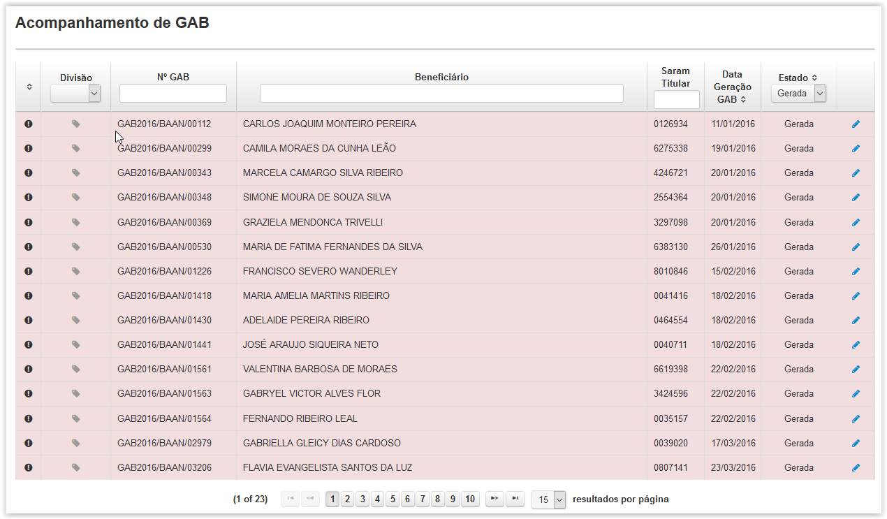
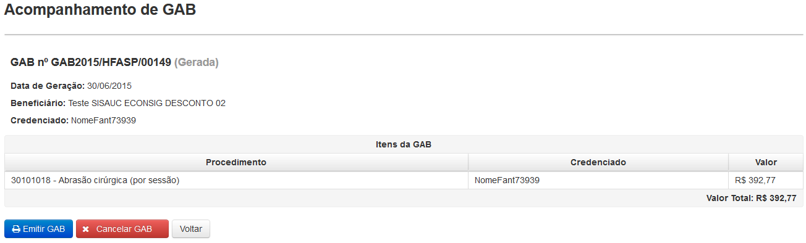

Clicando em 'GAB' surgirá a tela 'Acompanhamento de GAB' (Fig.30) onde será apresentada uma lista das GAB.
É possível facilitar a busca utilizando os filtros Nº GAB, Beneficiário e SARAM Titular, bastando apenas clicar e digitar a palavra a ser buscada ou selecionando a opção Estado.
O ícone ( ) e a linha com o fundo em vermelho indicam que a GAB é urgente.
) e a linha com o fundo em vermelho indicam que a GAB é urgente.

Fig.30 Tela 'Acompanhamento de GAB'
Para visualizar os detalhes da GAB deve-se clicar no botão ( ).
Será exibida a tela 'Acompanhamento de GAB'(Fig.31).
).
Será exibida a tela 'Acompanhamento de GAB'(Fig.31).

Fig.31 Tela 'Acompanhamento de GAB/ Dados da GAB'(GAB no estado de gerada)
Esta tela oferece as opções para 'Emitir GAB' ou 'Cancelar uma GAB'.
Ao clicar no botão () será gerado um relatório em formato PDF (modelo constante na ICA 160-24) com os dados da GAB para ser impressa, conforme Fig.32, sendo uma via entregue pelo Beneficiário ao Credenciado.

Fig.32 GAB
Ao clicar no botão () a GAB será cancelada por meio da tela 'Cancelar GAB', exibida na Fig.33, onde será obrigatório o registro do motivo do cancelamento.

Fig.33 Tela 'Cancelar GAB'
Não é possível cancelar uma GAB já apresentada.
Ao clicar no botão ( ) será gerado um relatório em formato PDF (modelo constante na ICA 160-24) com os dados da GAB para ser reimpressa, conforme imagem abaixo:
) será gerado um relatório em formato PDF (modelo constante na ICA 160-24) com os dados da GAB para ser reimpressa, conforme imagem abaixo: